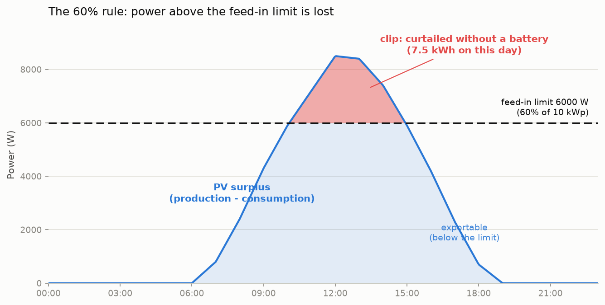
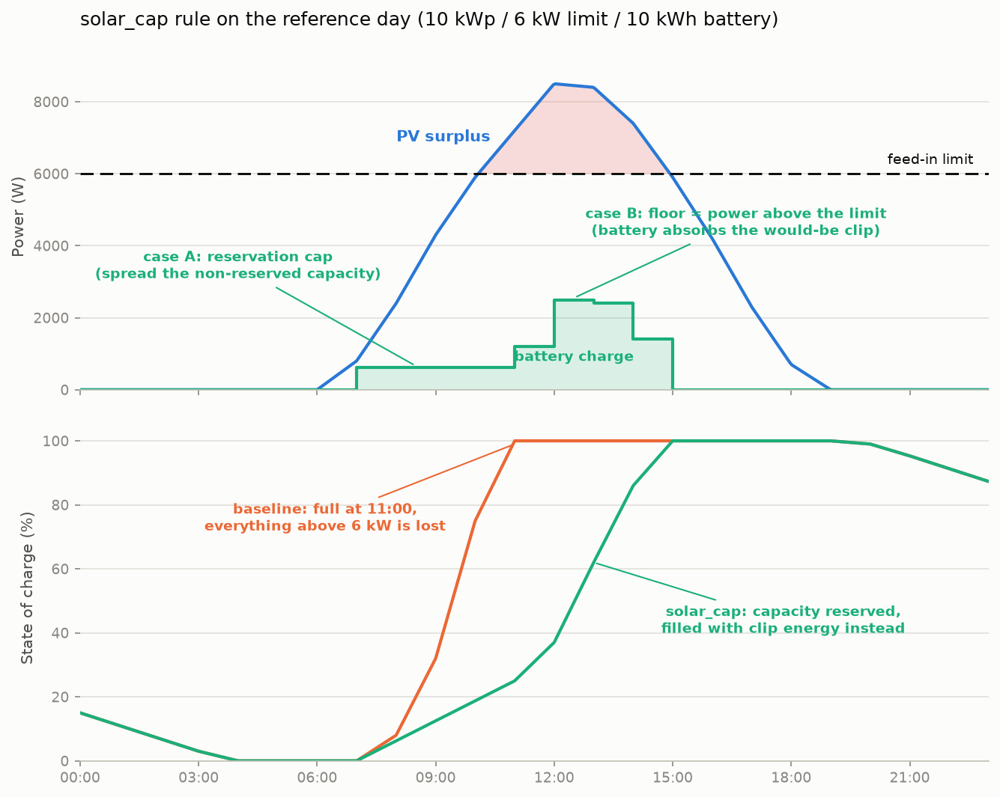

Peak Shaving¶
Why Peak Shaving?¶
Most PV systems produce peak power around midday. Without any intervention the battery charges as fast as possible and is full well before the afternoon. Once the battery is full, all surplus PV energy is fed into the grid -- often at the lowest grid prices of the day. For newer installations feed-in compensation may be very small or zero, so this exported energy is essentially wasted.
Peak shaving solves this by limiting the PV-to-battery charge rate so the battery fills gradually over the course of the day. The goal is to reach full capacity only by a configurable target hour (e.g. 14:00). This way the battery absorbs as much solar energy as possible and grid feed-in during midday peaks is minimised.
Status¶
The algorithm is in the status "experimental", which is the reason why it is only available in the logic type next. After collecting enough experience with that feature, it will move into default eventually.
Prerequisites¶
Peak shaving was introduced with 0.8.0 and is only available with the next logic type. Set this in the battery_control section of your configuration:
battery_control:
type: next # Required -- 'default' does not include peak shaving
The default logic type does not support peak shaving at all. Enabling peak shaving without switching to next has no effect.
Configuration¶
Add a peak_shaving block at the top level of your configuration file (not nested under battery_control):
peak_shaving:
enabled: false
time_active: true # target-time rule enabled
price_active: true # price rule enabled
solar_cap_active: false # solar feed-in limit rule (German Solarspitzengesetz)
allow_full_battery_after: 14 # Hour (0-23) -- battery should be full by this hour
price_limit: 0.05 # Euro/kWh -- slots at or below this price are "cheap"
feed_in_limit_w: 0 # Watt -- feed-in power limit (0 = off); formula: 0.6 * kWp * 1000
feed_in_limit_headroom: 1.0 # Safety factor >= 1.0 (recommended 1.1 if underestimated)
Parameter Reference¶
| Parameter | Type | Default | Description |
|---|---|---|---|
enabled |
bool | false |
Master switch for peak shaving |
time_active |
bool | true |
Enable target-time rule (spread charging until allow_full_battery_after) |
price_active |
bool | true |
Enable price rule (reserve capacity for cheap slots) |
solar_cap_active |
bool | false |
Enable solar feed-in limit rule (absorb PV above feed_in_limit_w) |
allow_full_battery_after |
int | 14 |
Target hour (0-23) for the time rule |
price_limit |
float | unset (None) |
Price threshold in Euro/kWh. The price rule only acts when a value is configured (e.g. 0.05). Set -1 to disable the price component explicitly. |
feed_in_limit_w |
int | 0 |
Absolute feed-in power limit in watts (solar rule). Formula: 0.6 * kWp * 1000. Set to 0 to disable. |
feed_in_limit_headroom |
float | 1.0 |
Safety factor (>= 1.0) on the forecast surplus (solar rule). Recommended: 1.1 if clipping is observed. |
Deprecated: The old mode parameter (time / price / combined) is still accepted for backward compatibility and mapped to the switches at startup; a deprecation warning is logged. New configurations should use the switch-based design above.
MQTT Runtime Control¶
The following parameters can be changed at runtime via MQTT without restarting batcontrol:
| Topic | Accepts | Description |
|---|---|---|
{base}/peak_shaving/enabled/set |
true / false |
Enable or disable peak shaving |
{base}/peak_shaving/allow_full_battery_after/set |
int 0-23 | Change the target hour for the time rule |
{base}/peak_shaving/price_limit/set |
float | Change the price threshold for the price rule |
{base}/peak_shaving/mode/set |
time / price / combined |
Deprecated: kept for backward compatibility, mapped onto time_active/price_active |
The rule switches themselves (time_active, price_active, solar_cap_active) and the solar parameters (feed_in_limit_w, feed_in_limit_headroom) have no MQTT setters and require restarting batcontrol to take effect.
Runtime changes are temporary and are not written back to the configuration file.
The allow_full_battery_after Target Hour¶
This parameter controls when the battery is allowed to be 100% full:
- Before this hour: the PV charge rate may be limited (depending on mode).
- At or after this hour: no limit is applied -- the battery charges as fast as possible.
The target hour applies globally to all three modes. Set it to the hour by which your PV system typically produces enough to fill the battery. For many Central European systems 14 (2 PM) is a good starting point; adjust based on your panel orientation and local conditions.
Rule Switches¶
Peak shaving has three independent rules that can be enabled or disabled via the time_active, price_active, and solar_cap_active switches:
time_active -- Target-Time Rule¶
Distributes the remaining free battery capacity evenly over the slots between now and allow_full_battery_after, using a counter-linear ramp. The allowed charge rate starts low and increases as the target hour approaches, which mirrors the typical PV generation curve that rises towards midday.
Formula:
slots_remaining = n (slots until allow_full_battery_after)
pv_surplus = sum of max(production - consumption, 0) per remaining slot
If pv_surplus > free_capacity:
wh_current_slot = 2 * free_capacity / (n * (n + 1))
charge_limit = wh_current_slot / interval_hours
Example (free capacity = 2000 Wh, 1 h intervals):
| Hours to target | Allowed charge rate |
|---|---|
| 8 | 55 W |
| 4 | 200 W |
| 2 | 666 W |
| 1 | 2000 W (full rate) |
If the expected PV surplus does not exceed the free capacity, no limit is applied -- the battery can absorb everything anyway.
price_active -- Price Rule¶
Reserves free battery capacity for upcoming cheap-price slots where PV is still producing. A slot is "cheap" when its price is at or below price_limit. Requires a price_limit value (use -1 to disable without changing the switch).
Only slots within the production window are considered. The production window ends at the first forecast slot where PV production is zero. This prevents reserving capacity for a cheap slot at e.g. 03:00 that would never produce any solar energy.
Before the cheap window:
1. Sum the expected PV surplus during cheap slots to get the target reserve.
2. Calculate how much additional charging is allowed: additional_allowed = free_capacity - target_reserve.
3. If additional_allowed <= 0: block PV charging entirely (rate = 0).
4. Otherwise: spread additional_allowed evenly over the slots before the cheap window.
Inside the cheap window:
- If total PV surplus during cheap slots exceeds free capacity, spread free_capacity evenly over cheap slots so the battery fills gradually.
- If surplus fits in free capacity, no limit is applied.
Combining Rules¶
When multiple rules are active, the strictest (lowest non-negative) limit wins. For example, if the time rule suggests 500 W and the price rule suggests 300 W, the applied limit is 300 W. This conservative approach prioritizes the rules in combination rather than overriding each other.
Backward compatibility: the old mode parameter (time / price / combined) is still accepted and mapped to the switches at startup:
- mode: time → time_active: true, price_active: false
- mode: price → time_active: false, price_active: true
- mode: combined → time_active: true, price_active: true
New configurations should use the switch-based design.
Solar Feed-in Limit (Solarspitzengesetz)¶
The German 60% Rule¶
The German "Solarspitzengesetz" (in force since 2025-02-25) limits uncontrolled PV plants to feeding at most 60% of their installed power into the grid. The inverter enforces this limit hard: production above it is curtailed and lost, unless self-consumed or charged into the battery.
For a 10 kWp plant this means at most 6,000 W of feed-in. On a clear summer day peaking at ~8.9 kW, several hours sit above the limit; without countermeasures about 7.5 kWh of energy are lost just on clipping.

How the Solar Cap Rule Works¶
The solar_cap_active rule reserves battery capacity before the predicted clipping window so it can absorb the excess power during the peak. Inside the clipping window, it enforces a minimum charge rate (the "floor") equal to the predicted clip power, allowing the battery to absorb power that would otherwise be curtailed.
The rule works in two phases:
Before clipping starts (reservation): free battery capacity minus the predicted total clip energy is spread evenly. If the required reserve exceeds free capacity, PV charging is blocked entirely (cap 0). This prevents normal PV power from displacing clip power in the battery.
During clipping (floor + absorption): the battery is required to accept at least the power above the feed-in limit. If free capacity is scarce, the cap equals the floor (absorb only clip power, grid feed-in at the limit) -- but see the minimum charge rate interaction below, which partly defeats this at the edges of the clip window. Otherwise, the battery can absorb additional surplus below the limit.

Configuration¶
Enable the rule via solar_cap_active: true and set the feed-in limit:
| Parameter | Type | Default | Description |
|---|---|---|---|
solar_cap_active |
bool | false |
Enable the solar feed-in limit rule |
feed_in_limit_w |
int | 0 |
Absolute grid feed-in power limit in watts. Formula: 0.6 * kWp * 1000 (e.g., 6000 W for a 10 kWp plant). Set to 0 to disable. |
feed_in_limit_headroom |
float | 1.0 |
Safety factor >= 1.0 applied to the forecast surplus before computing clip energy. Default 1.0 (neutral, no safety margin); recommended 1.1 if your solar forecast systematically underestimates production on clear days and you observe curtailment losses. |
Headroom trade-off: solar forecasts often underestimate midday peaks on clear days. The headroom reconstructs the likely real production curve so reservation and floor are sized correctly. Too low a value leaves clip energy on the table; too high a value wastes capacity on non-clipping days or displaces clip energy on capacity-scarce clipping days. Default 1.0 is lossless with a perfect forecast; 1.1 is the robust compromise and is recommended if you observe losses.
Priority Rule: Floor Overrides Caps¶
When the solar rule is active alongside other peak-shaving rules, the final charge limit is computed as:
final_limit = max(solar_floor, min(all_caps))
In words: if the solar floor (minimum charge rate needed to absorb clipped power) is higher than the strictest cap from the time or price rules, the floor wins. This is because clipped energy is physically lost and outweighs economic optimization.
Consequence: the solar floor also applies after the allow_full_battery_after target hour and at high battery state-of-charge, so the battery may reach 100% later than the target hour on clipping days. A late-full battery weighs less than lost energy.
Limitations and Warnings¶
- Solar forecast sensitivity: the rule relies on production forecasts, which may underestimate peak production on clear days. The
feed_in_limit_headroomparameter mitigates this, but a live measurement of current production would be more accurate. - Inverter max charge rate: if your inverter's
max_pv_charge_rateis below the predicted clip power, some curtailment is physically unavoidable. Batcontrol logs a startup warning when this condition is detected. - Minimum charge rate eats the reserve: at the start and end of the clip window the floor is small, and the 500 W minimum charge rate overrides it. See the section below.
For a detailed evaluation of the algorithm including simulation results and sensitivity analysis, see Solar Limit Evaluation.
Charge Limit and Minimum Charge Rate¶
The calculated charge limit is applied via Mode 8 (LIMIT_BATTERY_CHARGE_RATE). In this mode the inverter caps PV-to-battery charging at the given wattage while still allowing the battery to discharge normally.
A minimum charge rate of 500 W is enforced: any computed limit between 1 W and 499 W is raised to 500 W to avoid inefficient low-power charging. A limit of exactly 0 W (block charging completely) is kept as-is and is not raised.
Interaction with the minimum charge rate¶
The minimum charge rate is applied after the rules have been merged, so it can override a deliberately low limit. This matters most for the solar cap rule when free capacity is scarce and the cap has been set equal to the floor.
At the edges of the clip window the excess over the feed-in limit is only a few dozen watts. The rule therefore asks for a correspondingly small charge rate, but the 500 W minimum raises it -- and the battery consumes capacity that was reserved for the peak.
The example day on the scenarios page shows the effect for the "Solar cap only" configuration:
| Slot | Floor asked for | Actually charged |
|---|---|---|
| 11:45 | 54 W | 500 W |
| 12:00 | 243 W | 500 W |
| 12:15 | 396 W | 500 W |
clip energy in those three slots : 173 Wh (what the rule intended)
actually charged at 500 W : 375 Wh
excess : 202 Wh
Those 202 Wh are missing later: the battery reaches 100 % at 13:30, just before the production peak, and the remaining excess is curtailed. On that day the solar cap rule alone therefore loses about 0.2 kWh -- slightly more than the time based rule, which holds the battery back far longer.
Practical consequence
Do not run solar_cap_active on its own if your battery tends to be nearly
full when clipping starts. Combined with time_active the battery still
has room at the beginning of the clip window, the floor stays above 500 W
where it matters, and the example day reaches zero curtailment.
This is a genuine trade-off rather than a clear defect: the 500 W minimum exists because charging a battery at 54 W is inefficient. It is tracked in issue #409.
The charge limit is published via MQTT:
| Topic | Type | Retained | Description |
|---|---|---|---|
{base}/peak_shaving/charge_limit |
int | No | Current charge limit in W (-1 = inactive / no limit) |
When Peak Shaving is Skipped¶
Peak shaving cap rules (time and price) are automatically bypassed in the following situations. However, the solar floor always applies during predicted clipping even after allow_full_battery_after and in the high-SOC region, because clipped energy is physically lost:
| Condition | Time/Price Caps | Solar Floor |
|---|---|---|
| No PV production (nighttime) | Bypassed | Not applied |
Past allow_full_battery_after hour |
Bypassed | Still applies (if clipping predicted) |
Battery in always_allow_discharge region (high SOC) |
Bypassed | Still applies (if clipping predicted) |
| Force-charge from grid active (Mode -1) | Bypassed | Not applied |
| Discharge not allowed (battery preserved) | Bypassed | Not applied (no charge cap is active in this state, the inverter charges all surplus anyway) |
| evcc is actively charging the EV | Bypassed | Not applied |
| EV connected in PV mode (evcc) | Bypassed | Not applied |
price_limit not configured |
Price rule inactive | Not affected |
evcc Interaction¶
When an EV charger is managed by evcc:
- EV actively charging (
charging=true): peak shaving is disabled because the EV is already consuming excess PV energy. - EV connected in PV mode (
connected=trueANDmode=pv): peak shaving is disabled because evcc will naturally absorb surplus PV once its threshold is reached. - EV disconnects or mode changes: peak shaving is automatically re-enabled.
Home Assistant Auto-Discovery¶
When MQTT auto-discovery is enabled, the following Home Assistant entities are created automatically:
| Entity | Type | Description |
|---|---|---|
| Peak Shaving Enabled | Switch | Enable/disable peak shaving |
| Peak Shaving Allow Full After | Number (0-23) | Set the target hour |
| Peak Shaving Charge Limit | Sensor (W) | Current calculated charge limit |
Self-Correction¶
The charge limit is recalculated every evaluation cycle (typically every 3 minutes). If clouds reduce PV production significantly, the free capacity stays higher at the next cycle and the counter-linear ramp automatically produces a higher allowed rate. This means the system self-corrects without manual intervention, though there is no intra-cycle adjustment.
Quick-Start Examples¶
Simple time-based setup -- spread charging until 14:00, no price or solar awareness:
battery_control:
type: next
peak_shaving:
enabled: true
time_active: true
price_active: false
solar_cap_active: false
allow_full_battery_after: 14
Price-aware combined setup -- reserve capacity for cheap slots below 5 ct/kWh:
battery_control:
type: next
peak_shaving:
enabled: true
time_active: true
price_active: true
solar_cap_active: false
allow_full_battery_after: 14
price_limit: 0.05
With solar feed-in limit -- add clipping absorption for a 10 kWp plant (6000 W limit):
battery_control:
type: next
peak_shaving:
enabled: true
time_active: true
price_active: true
solar_cap_active: true
allow_full_battery_after: 14
price_limit: 0.05
feed_in_limit_w: 6000
feed_in_limit_headroom: 1.1